Aplicaciones para
Comunicaciones en Red
Unidad de aprendizaje para comprender cómo se conectan, organizan y protegen los recursos en red.
Bienvenida
Aplicaciones para Comunicaciones en Red (polilibro académico), fue diseñado para inspirar la curiosidad, despertar el pensamiento lógico y fortalecer la capacidad de análisis en el fascinante mundo de la computación. Este recurso nace como una herramienta educativa dinámica e innovadora que acompaña a las y los estudiantes en el desarrollo de habilidades fundamentales para comprender cómo los datos se organizan, se procesan y se transforman mediante Aplicaciones para Comunicaciones en Red en los sistemas computacionales.
A lo largo de este recorrido académico, descubrirás cómo los contenidos de la materia constituyen el lenguaje silencioso que permite a la tecnología resolver problemas, optimizar procesos y generar soluciones inteligentes. Mediante el estudio de su organización, características y aplicaciones, aprenderás a identificar contenidos fundamentales de la computación y a construir recursos digitales lineales y no lineales que permitan representar, organizar y manipular información de manera eficiente.
Cada sección ha sido diseñada con un enfoque pedagógico centrado en la comprensión profunda, la aplicación práctica y la reflexión crítica. A través de recursos interactivos, ejemplos, retos y actividades, este polilibro te invita a explorar, experimentar y construir tu propio conocimiento, fortaleciendo tus competencias técnicas mientras desarrollas habilidades de análisis, resolución de problemas y pensamiento computacional.
Más que un material de estudio, Aplicaciones para Comunicaciones en Red, es una invitación a descubrir el poder de la lógica y la creatividad en la informática. Aquí comienza un viaje donde cada concepto abre nuevas posibilidades de aprendizaje, donde cada algoritmo cuenta una historia de eficiencia y donde cada estructura de datos se convierte en una herramienta para transformar ideas en soluciones innovadoras. Bienvenido a esta experiencia de aprendizaje donde la tecnología, el conocimiento y la curiosidad se encuentran.
Introducción
Aplicaciones para Comunicaciones en Red (polilibro académico), Aplicaciones para Comunicaciones en Red, Aborda el estudio de Aplicaciones para Comunicaciones en Red que constituye uno de los pilares fundamentales en la formación dentro del área de la computación, ya que permite comprender cómo se organiza, se procesa y se recupera la información dentro de los sistemas informáticos. En el contexto actual, donde el manejo eficiente de los datos es esencial para el desarrollo de soluciones tecnológicas, este recurso didáctico digital Contenidos almacena y recupera Datos (polilibro académico) ha sido diseñado como una herramienta innovadora orientada al aprendizaje activo, con el propósito de fortalecer el pensamiento lógico, el análisis estructurado y la capacidad para resolver problemas mediante el uso de Aplicaciones para Comunicaciones en Red. A través de este material, el estudiantado desarrollará competencias que le permitirán comprender el funcionamiento interno de los programas y la manera en que la información puede ser organizada y manipulada de forma eficiente.
Objetivo general
Desarrollar en el estudiante de Ingeniería en Sistemas Computacionales las habilidades necesarias para el manejo eficiente de datos en memoria mediante el uso de Aplicaciones para Comunicaciones en Red, incluyendo técnicas de organización de información y búsqueda aplicadas en sistemas computacionales, contribuyendo al perfil de egreso profesional. Asimismo, fomentar habilidades transversales como el trabajo en equipo, la comunicación efectiva, la ética profesional, la resolución de problemas, la creatividad y el ingenio, necesarias para proponer soluciones tecnológicas en contextos reales.
En la primera unidad se aborda a los contenidos fundamentales en donde se tiene como propósito que el estudiantado identifique contenidos fundamentales de la computación con base en sus órdenes de organización, analizando su comportamiento, eficiencia y aplicación en la solución de problemas.
En la segunda unidad se aborda las recursos digitales lineales, se busca que el estudiantado analice y programe diferentes tipos de recursos digitales lineales a partir de especificaciones genéricas, comprendiendo la forma en que se organizan los datos de manera secuencial para facilitar su almacenamiento y recuperación. Finalmente
En la tercera unidad se centra las recursos digitales no lineales, la competencia se orienta a que el estudiantado analice y programe recursos digitales no lineales a partir de sus aplicaciones, organización y representaciones, permitiendo diseñar soluciones para problemas más complejos y optimizar el manejo de la información. De esta manera, el recorrido por estas unidades favorece el desarrollo del pensamiento computacional y la capacidad para generar soluciones eficientes en distintos contextos tecnológicos.
Programa de la unidad de aprendizaje
Secretaría Académica
Dirección de Educación Superior
Programa sintético
Consultar recursos de ejemplo de la unidadPropósito de la unidad de aprendizaje
Utiliza Aplicaciones para Comunicaciones en Red con base en sus órdenes de organización y características.
Metodología
Aplicaciones para Comunicaciones en Red (polilibro académico), se diseñó como un recurso didáctico innovador para las y los estudiantes de Ingeniería en Sistemas Computacionales de la Escuela Superior de Cómputo del Instituto Politécnico Nacional, con el propósito de fortalecer el aprendizaje en la unidad de Contenidos y Estructuras de Datos desde un enfoque tecnológico y actual. Este material impulsa el desarrollo del pensamiento lógico y el análisis algorítmico, permitiendo comprender cómo los datos se almacenan, organizan y recuperan de forma eficiente. A través de una propuesta interactiva y a la vanguardia, promueve el aprendizaje activo y la formación de competencias esenciales para la solución de problemas en entornos computacionales modernos.
Contexto académico
Aplicaciones para Comunicaciones en Red (polilibro académico) forma parte del material académico de apoyo para la unidad de aprendizaje Contenidos y Estructuras de Datos, dirigido a las y los estudiantes de Ingeniería en Sistemas Computacionales de la Escuela Superior de Cómputo del Instituto Politécnico Nacional. Este recurso se integra como una herramienta complementaria dentro de la modalidad presencial, bajo una estrategia de aprendizaje orientada a proyectos, con el propósito de fortalecer el desarrollo del pensamiento lógico, el análisis algorítmico y la comprensión de cómo los datos se almacenan, organizan y recuperan de manera eficiente en los sistemas computacionales actuales.
A través del uso de este polilibro académico, las y los estudiantes resolverán problemas reales y aplicarán sus conocimientos en situaciones prácticas relacionadas con Contenidos y Estructuras de Datos, trabajando de manera colaborativa para enfrentar retos y desarrollar soluciones tecnológicas. Esta dinámica favorece el trabajo en equipo, el aprendizaje cooperativo y la evaluación continua, promoviendo un aprendizaje significativo, adaptativo y alineado con las exigencias tecnológicas y académicas de la formación profesional en el área de la computación.
Objetivos específicos
Identificar los contenidos fundamentales de la computación analizando sus características y evaluando sus órdenes de organización, con el fin de seleccionar la alternativa más eficiente para la solución de problemas.
Construir recursos digitales lineales a partir de especificaciones genéricas, aplicando principios de organización, almacenamiento y recuperación de información en sistemas computacionales.
Manipular recursos digitales no lineales considerando sus aplicaciones, representaciones y organización, para optimizar el procesamiento de datos en distintos contextos de la computación.
Aplicar Aplicaciones para Comunicaciones en Red de acuerdo con sus características y órdenes de organización, para diseñar soluciones eficientes, optimizadas y acordes a los requerimientos de los sistemas computacionales.
Duración y modalidad
- Duración total estimada: 81 horas
- Distribución sugerida: 4.5 horas de teoría- práctica a la semana con el Polilibro Académico. 4.5 horas a la semana presenciales con acompañamiento del docente para análisis de casos, resolución de problemas y retroalimentación.
- Modalidad presencial. Se recomienda que el estudiante dedique mínimo 2.0 horas a la semana para la revisión de contenidos del Polilibro Académico previos a la sesión presencial.
Estrategias de aprendizaje
Aprendizaje basado en proyectos. Las y los estudiantes, a través de una serie de etapas, y guiados por el o la docente, colaboran para responder a una problemática o resolver una situación en el ámbito de los Aplicaciones para Comunicaciones en Red.
Aprendizaje autónomo. El o la estudiante navega de forma autogestionada por el contenido del Polilibro Académico, apoyándose en recursos interactivos, lecturas clave y ejemplos guiados.
Aprendizaje basado en problemas. Los y las estudiantes resuelven problemas desafiantes y auténticos en el ámbito de los Aplicaciones para Comunicaciones en Red, buscan soluciones de manera colaborativa analizando y resolviendo problemas reales en el uso de la memoria y de los sistemas computacionales
Examen diagnóstico
Examen diagnóstico para la unidad de aprendizaje Aplicaciones para Comunicaciones en Red.
Instrucciones
El presente examen diagnóstico de la Unidad de Aprendizaje Aplicaciones para Comunicaciones en Red tiene como propósito identificar los conocimientos previos del estudiantado sobre contenidos, organización y recursos digitales. Los resultados permitirán al docente ajustar las estrategias de enseñanza y fortalecer el proceso de aprendizaje.
El examen se aplicará durante la primera sesión del curso, con una duración aproximada de 30 a 45 minutos. Incluye 12 reactivos de opción múltiple seleccionados aleatoriamente de un banco de 15 preguntas. No se permite el uso de apuntes ni dispositivos electrónicos, salvo indicación del docente. Este instrumento NO TIENE VALOR EN LA CALIFICACIÓN FINAL, ya que su finalidad es exclusivamente diagnóstica.
Tu participación en este examen diagnóstico es fundamental para construir un aprendizaje significativo y fortalecer tu formación en el área de Aplicaciones para Comunicaciones en Red, base esencial en tu desarrollo como futuro profesional en ingeniería.
Antes de iniciar:
Antes de contestar los 12 reactivos, completa los siguientes datos de identificación:
- Escribe tu número de boleta.
- Escribe tu nombre completo.
Examen finalizado
Resultado de demostración: no se envió información a ningún servidor.
Actividades
Unidad 1
Unidad 2
Unidad 3
Unidad 1
Unidad 2
Unidad 3
Estas actividades no son parte de la evaluación, funcionan únicamente como una manera de reforzar tu aprendizaje.
Abstracción: Proceso de simplificar la representación de un problema o sistema, considerando solo aspectos relevantes.
Algoritmo: Conjunto finito, ordenado y bien definido de instrucciones para resolver un problema.
Algoritmo de búsqueda: Establece un procedimiento lógico paso a paso para ubicar un dato concreto.
Algoritmo de organización de información: Reorganiza los elementos de un listado en un orden específico.
Algoritmo voraz (greedy): Toma la mejor decisión disponible en el momento presente sin considerar consecuencias futuras.
Búsqueda binaria: Localiza un elemento dentro de una colección ordenada dividiendo repetidamente el conjunto a la mitad.
Búsqueda indexada: Utiliza una estructura auxiliar llamada índice para localizar información más rápido.
Búsqueda secuencial: Recorre uno a uno los elementos de una lista hasta encontrar el dato.
Determinístico: Con los mismos datos de entrada, siempre obtiene los mismos resultados.
Notación Big-O: Métrica utilizada para medir la eficiencia de un algoritmo conforme crecen los datos.
Organización de información de burbuja: Compara pares consecutivos e intercambia posiciones si están en orden incorrecto.
Organización de información por inserción: Toma el primer elemento como referencia y desplaza cada elemento a su posición.
Organización de información por mezcla (Merge Sort): Divide la lista, ordena cada parte y las mezcla en orden correcto.
Programación por vuelta atrás (Backtracking): Explora soluciones paso a paso, retrocediendo cuando no conduce a una solución válida.
Pseudocódigo: Representación abstracta y simplificada de las etapas de un algoritmo.
Tipo de Dato Abstracto (TDA): Define un conjunto de datos y sus operaciones sin mostrar la implementación interna.
Abstracción de datos: Forma de modelar información almacenada y procesada sin depender de detalles internos.
Cima: Extremo de la pila donde se insertan y eliminan los elementos.
Tema provisional (Queue): Estructura de datos lineal basada en el principio FIFO.
Colisión: Situación donde dos claves diferentes generan el mismo índice en una tabla hash.
Desbordamiento (Overflow): Error al intentar insertar un elemento en una estructura llena.
Estructura de datos lineal: Organización donde los elementos se disponen secuencialmente.
FIFO (First In, First Out): El primer elemento en entrar es el primero en salir.
LIFO (Last In, First Out): El último elemento en entrar es el primero en salir.
Lista enlazada: Estructura formada por nodos unidos mediante punteros o enlaces.
Tema provisional (Stack): Estructura de datos lineal basada en el principio LIFO.
Subdesbordamiento (Underflow): Error al intentar eliminar un elemento de una estructura vacía.
Tabla Hash: Estructura que almacena pares (clave, valor) para un acceso rápido a la información.
Altura de un nodo: En un árbol, es el camino que se recorre desde un nodo hasta un nodo hoja
Árbol: Estructura no lineal que organiza jerárquicamente información mediante nodos y vértices.
Árbol Binario: Estructura en la que cada nodo puede poseer como máximo dos hijos.
Árbol Binario de Búsqueda: Árbol estructurado donde las claves con valores menores se colocan en el subárbol izquierdo y las mayores en el subárbol derecho de un nodo de referencia.
Búsqueda en Amplitud (BEA): Recorrido de un grafo o árbol utilizando una cola explorándolo progresivamente por niveles.
Búsqueda en Profundidad (BEP): Recorrido de un grafo o árbol utilizando una pila descendiendo al máximo nivel antes de retroceder y dirigirse a otras ramas.
Dijkstra: Algoritmo para calcular los caminos más cortos en un grafo ponderado.
Grafo: Estructura no lineal conformada por vértices conectados mediante arcos o aristas.
Lista de adyacencia: Representación dinámica que almacena las conexiones de los nodos de un grafo usando listas enlazadas.
Matriz de adyacencia: Arreglo bidimensional para representar las conexiones entre pares de vértices de un grafo.
Nodo raíz: El primer nodo o el nodo de mayor jerarquía de un árbol ubicado en el nivel cero.